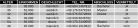
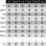
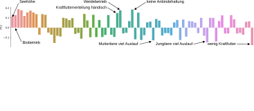
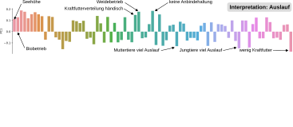
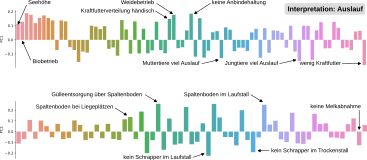
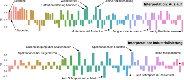

Vorlesung 3: Merkmalskonstruktion (feature engineering)
& Dimensionsreduktion
& Dimensionsreduktion


Motivation
- Wir haben schon ein Beispiel für Merkmalkonstruktion (feature engineering) zur Transformation von Daten gesehen: one-hot encoding.
- Wir können noch einiges mehr tun, um mehr aus Daten "herauszuholen".
- Auf der anderen Seite können Daten auch zu viele Attribute / Merkmale / Features haben.
- Die Anzahl der Attribute auf ein sinnvolles Maß zu reduzieren heißt Dimensionsreduktion.
Feature Engineering
Beispiel: Recruiter
- Wir arbeiten bei einem Recruiter und möchten herausfinden, auf welche Kandidat:innen wir unsere Bemühungen konzentrieren sollen.
- Wir benutzen Informationen zu Demographie, Einkommen und Abschluss um die Vermittelbarkeit vorherzusagen.

One-hot encoding und binäre Attribute
- Wir transformieren Wahrheitswerte in Einsen und Nullen.
- Wir verwenden one-hot encoding, um kategorische Attribute in mehrere Spalten mit binären Attributen aufzutrennen.
Reskalierung
- Zahlen mit unterschiedlichen Größenordnungen, wie z.B. Alter (zwischen 0 und 100) und Jahreseinkommen (zwischen 0 und 100.000) können ein Problem sein.
- Unterschiedliche Skalierungen können dazu führen, dass große Zahlen mehr Gewicht bekommen als kleine, obwohl das nicht beabsichtigt ist.
- Wir reskalieren beide Zahlen indem wir durch den maximal möglichen Wert teilen.
Löschen von Attributen
- Manche Attribute sind geschützt und dürfen nicht zur Vorhersage von z.B. Beschäftigungsfähigkeit verwendet werden.
- Geschlecht zählt zu diesen Attributen - wir entfernen es.

Neue Attribute
- Daraus, wie wiel Jahreseinkommen pro Alter eine Person verdient lassen sich vielleicht Rückschlüsse über die Ambitionen der Person ziehen.
- Wir konstruieren ein neues Attribut Einkommen / Alter.
- Die Telefonnummern sind nutzlos, da sie zufällig vergeben werden. Aber aus der Vorwahl können wir Rückschlüsse über das Aufenthaltsland ziehen.
Dimensionsreduktion
Wenn wir zu viele Attribute haben ...
Problem 1: Große Datenmengen
Erinnern wir uns an das Beispiel mit dem Text:
- Die Deutsche Sprache hat etwa 75.000 Worte.
- Um einen Satz mit 6 Worten darzustellen, brauchen wir eine 75.000 x 6 Zellen große Tabelle.
- Diese würde 75.000 x 6 x 32 / 8 / 1024 / 1024 = 1.7 Megabyte an Speicher belegen* → sehr ineffizient.

*Selbst wenn wir die Zahlen nicht als 32 Bit Integer sondern nur als 2 Bit Wahrheitswerte speichern, sind es noch 0.11 MB!
Der Fluch der Dimensionalität
- Fügen wir unserem Datensatz ein weiteres Attribut hinzu, dann bekommt der Raum in dem sich unsere Daten befinden eine weitere Dimension.
- Mit jeder weiteren Dimension steigt das Volumen des Raumes rapide an.
- Konsequenz 1: 100 Stichproben decken den (eindimensionalen) Raum zwischen 0 und 1 gut ab. In einem 10-dimensionalen Raum sind sie viel zu wenig.
- Konsequenz 2: Der Unterschied zwischen der kleinsten und der größten Distanz zwischen zwei Datenpunkten wird beliebig klein. Cluster zu finden wird schwierig!

Ein Zentimeter besteht aus 10 Millimetern, ein Quadratzentimeter hingegen aus 100 Quadratmillimetern. Quelle: Wikipedia, CC BY-SA 3.0.
{kind=link}
→ Distanzmaße wie die Euklidische Distanz eignen sich schlecht für hochdimensionale Räume. Besser: Ähnlichkeitsmaße (Kosinusähnlichkeit).
Lösung: Dimensionsreduktion
- Selektion von Attributen: Attribute die nichts zur Lösung des Problems beitragen entfernen.
- Projektion: Wir suchen nach einer Projektion der Datenpunkte in einen Raum, in dem Unterschiede der Datenpunkte maximal zur Geltung kommen.
- Ein Verfahren mit dem das erreicht werden kann ist die Hauptkomponentenanalyse (principal component analysis, PCA).
- Das Ergebnis einer PCA ist eine Projektion der Daten in einen Raum in dem die Varianz der Datenpunkte in wenigen Dimensionen konzentriert ist.

Visualisierung einer Projektion mit PCA in zwei Dimensionen. Quelle: Wikipedia, CC BY-SA 4.0.
{kind=link}
→ Das Ergebnis der PCA hat zwar erst einmal gleich viele Dimensionen wie der Ausgangsraum aber nur wenige sind wirklich wichtig. Die anderen Dimensionen können wir entfernen.
Beispiel PCA für Bauernhöfe




Beispiel PCA für Bauernhöfe


Zusammenfassung
- Feature Engineering hilft uns dabei, das meiste aus unseren Daten herauszuholen und Probleme mit den machine learning Algorithmen bzw. rechtlichen Vorgaben zu vermeiden. Techniken sind:
- One-hot encoding
- Reskalierung
- Konstruktion von neuen Attributen
- Löschen von Attributen
- Zu viele Attribute (Dimensionen) führen zu Problemen beim Speicherbedarf und potentiell auch Rechenzeit.
- Der Fluch der Dimensionalität sorgt dafür, dass Distanzmaße Bedeutung verlieren und Cluster schwer zu finden sind.
- Dimensionsreduktion ist eine Lösung. Sie konzentriert die in den Daten enthaltene Varianz in wenigen Dimensionen.